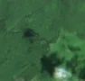

1,3 ha · Brețcu
văzută schimbată prima dată pe 26 iun. 2026

Autorizația cea mai apropiată nu acoperă tăierea: schimbarea cade în afara parcelei autorizate.
APV 2600128000160 · Ocolul Silvic Brețcu, valabilă 10 iun. 2026 – 9 oct. 2026, la 1 m
Terenul: pădure de stat, după amenajamentul silvic publicat.
Ce se vede în poze: În poza detaliată zona marcată era acoperită de pădure deasă, iar în poza «după» apare o fâșie lungă de pământ gol, deschis la culoare, în mijlocul pădurii care rămâne verde. Asta arată că arborii au fost îndepărtați, deci pare o tăiere rasă.